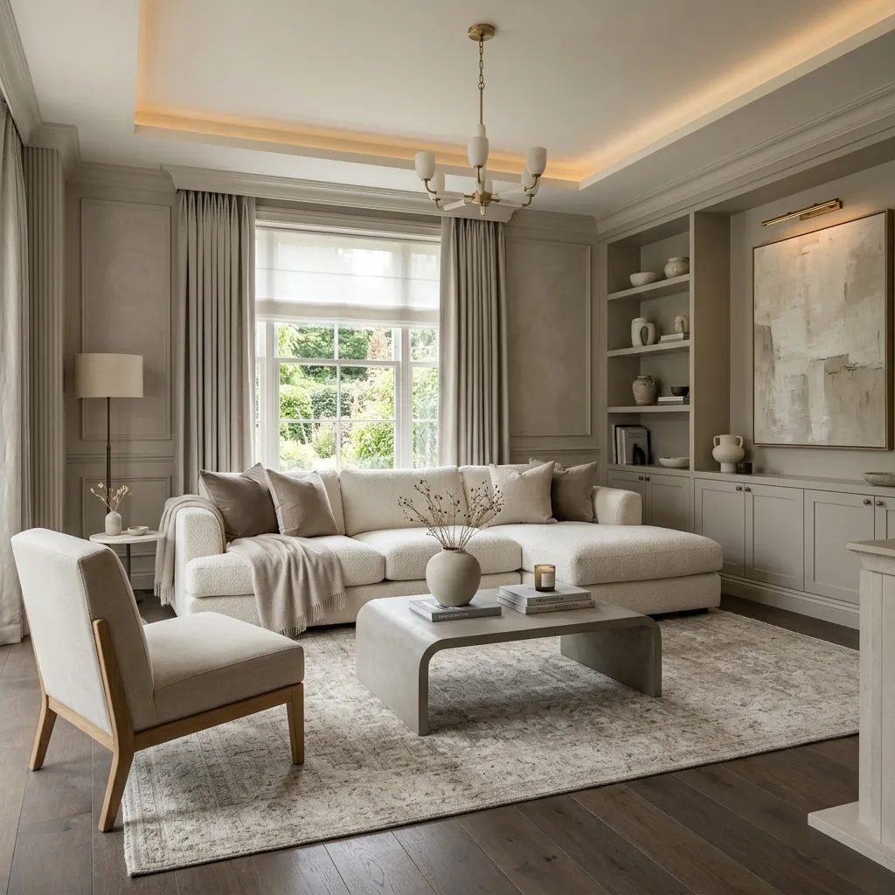

What is "Quiet Luxury" in Interior Design? (How to Get the Look)
There is a massive shift happening in the world of design right now. We are collectively moving away from flashy logos, loud statement pieces, and hyper-trendy decor that goes out of style in six months. In its place, a new aesthetic has taken over: Quiet Luxury.
Also known as "stealth wealth" or the "old money aesthetic," quiet luxury started in the fashion world, but it has completely revolutionized interior design. It is the art of creating a space that feels incredibly expensive, deeply comfortable, and effortlessly timeless, without ever screaming for attention.
If true luxury used to be defined by a giant chandelier and gold-leaf furniture, quiet luxury is defined by the heavy, satisfying feel of solid brass door hardware, the drape of custom linen curtains, and the perfect, subtle undertone of a greige wall.
But the best part about quiet luxury? You do not actually need a billionaire's bank account to achieve it. It is entirely about curation, restraint, and prioritizing quality over quantity. Let's explore exactly what quiet luxury is, and how you can replicate this highly sought-after aesthetic in your own home.

The Philosophy Behind Quiet Luxury
To understand quiet luxury, you have to understand what it is not. It is not "bling." It does not rely on heavily branded decor items (like designer logo throw blankets). It also isn't the hyper-minimalist, cold, clinical look where a room feels like a museum where you aren't allowed to sit down.
Quiet luxury is about longevity. It is the belief that if you buy an armchair, it shouldn't just look good on Instagram today; it should be so well-made and classically designed that you can pass it down to your children in thirty years.
THE CORE MOTTO
Buy less, but buy the absolute best that you can afford. Let the quality of the materials do the talking, not the brand name.
Pillar 1: Obsessive Material Quality
In a room where the colors are muted and the design is simple, the materials have nowhere to hide. Quiet luxury relies heavily on authentic, natural materials that age beautifully.
- Textiles: Swap out shiny polyester and cheap velvet for rich, textural fabrics. Think Belgian linen bedding, heavy wool rugs, bouclé accent chairs, and cashmere throws. These materials physically feel expensive when you touch them.
- Woods: Avoid highly manufactured woods with glossy plastic veneers. Look for solid woods with matte finishes—walnut, oak, and ash. You want to see and feel the natural grain.
- Metals: Chrome can sometimes feel cold and commercial. Quiet luxury favors unlacquered brass or aged bronze. Unlacquered brass is particularly luxurious because it develops a natural, unique patina over time based on how you touch it.
- Stone: Instead of stark white, high-gloss marble, look toward honed (matte) travertine, soapstone, or heavily veined marbles in warm tones.
Pillar 2: A Restrained, Nuanced Palette
Quiet luxury rarely utilizes loud, neon, or primary colors. It finds its drama in subtle nuances. The color palette is almost always rooted in nature.
Instead of a standard builder-grade white, a quiet luxury home will use a complex "greige" (grey-beige), a warm putty, or a soft mushroom color. These complex neutrals change beautifully as the sunlight moves through the room during the day.
When color is introduced, it is muted and sophisticated. Deep olive greens, rich burgundies, warm terracottas, or navy blues are used to ground a room, often applied to an entire room (walls, trim, and ceiling) for a highly customized, enveloping look known as "color drenching."

Pillar 3: The Art of Ambient Lighting
You can have the most expensive furniture in the world, but if your room is lit by a single, harsh, cool-toned LED bulb on the ceiling, the room will look cheap. Lighting is the ultimate luxury.
Quiet luxury spaces never rely solely on overhead lighting. They utilize layered lighting to create a moody, flattering, and warm atmosphere.
- Wall Sconces: Adding wall sconces instantly makes a home feel custom-built. They wash the walls with soft light and act as architectural art.
- Picture Lights: Hanging a brass picture light over a piece of art immediately elevates the art, making it look like a piece from a gallery.
- Warm Bulbs Only: Ensure every bulb in your house is between 2700K and 3000K. This mimics the warm, comforting glow of candlelight.
Pillar 4: Architectural Details and Hardware
In quiet luxury, the magic is in the details you touch every single day. A standard kitchen cabinet can look incredibly high-end just by upgrading the hardware.
Swapping out lightweight, hollow cabinet pulls for solid, heavy brass knobs makes a massive psychological difference. When a drawer feels heavy and substantial to pull, the brain immediately registers it as "expensive."
Additionally, focus on window treatments. Pre-packaged, grommet-style curtains often look inexpensive. To achieve quiet luxury, hang custom (or custom-looking) pinch-pleat drapes. Hang the curtain rod as high and wide as possible to make your ceilings look taller and your windows look massive. Ensure the fabric just barely "kisses" the floor.
Frequently Asked Questions
Can I achieve quiet luxury on a budget?
Yes! Quiet luxury on a budget is all about curation. Instead of buying a completely new bedroom set made of cheap particleboard, spend that same money on one beautiful, high-quality solid wood dresser from a vintage store, and pair it with a simple metal bed frame. Focus on upgrading small touchpoints: switch out your light switches, upgrade cabinet knobs, and use heavy, textured linen curtains.
What is the difference between minimalism and quiet luxury?
While both styles hate clutter, minimalism is often focused on the absence of things (stark white walls, empty surfaces, sleek modern lines). Quiet luxury is focused on the *quality* of things. It is warmer, more layered, and deeply focused on traditional craftsmanship and rich textures.
What kind of art fits the quiet luxury aesthetic?
Avoid mass-produced prints with typography or generic cityscapes. Look for original vintage oil paintings (landscapes or moody portraits), subtle abstract pieces with heavy texture, or large-scale black and white photography. Always frame the art in high-quality wood or thin metal frames with an oversized white mat board to give it a gallery feel.